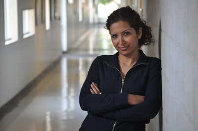

پذيرش > اخبار > عشا مومنی به امریکا بازگشت: دراین مدت یک زندان نامرئی دیدم


 عشا مومنی به امریکا بازگشت: دراین مدت یک زندان نامرئی دیدم عشا مومنی به امریکا بازگشت: دراین مدت یک زندان نامرئی دیدم
24 مرداد 1388 - - نسخه قابل چاپ
تغییر برای برابری- عشا مومنی دانشجو رشته علوم ارتباطات، فعال کمپین در کالیفرنیا پس از رفع ممنوع الخروجی اش به امریکا بازگشت.
عشا مومنی مرداد 1387 برای انجام پروژه دانشگاهی اش یعنی تهیه فیلمی درباره جنبش زنان ایران با تمرکز بر کمپین یک میلیون امضا به ایران آمد. او در تاریخ 24 مهر ماه توسط ماموران امنیتی بازداشت و حدود یک ماه در بند 209 زندان اوین بود. اتهام او اقدام علیه امنیت بود . وی سپس با سپردن وثیقه 200 میلیونی از زندان آزاد اما ممنوع الخروج شد. عشا مومنی برای رفع ممنوع الخروجی اش تلاش بسیار کرد و مدام در رفت و آمد به دادگاه امنیت بود تااین که سرانجام مرداد ماه امسال گذرنامه او را پس دادند و او روز 13مرداد (چهار اگوست) – درست یک سال پس از ورودش به ایران- در حال خروج از کشور مجددا از سفرماند و پاسپورتش برای حل مشکلات اداری ضبط شد. سرانجام یک هفته بعد ضمن رفع ممنوع الخروجی، پاسپورتش به او برگردانده شد و عشا روز 20 مرداد از ایران خارج شد. پیش از ترک ایران گفتگوی کوتاهی با سایت تغییر برای برابری انجام داد که می خوانید:
عشا این نخستین بار است که پس از آزادی از زندان با ما گفتگو می کنی. چرا پس از آزادی با هیچ رسانه ای مصاحبه نکردی ؟
 وقنی از زندان بیرون آمدم تحت فشار بودم. مرا تهدید کردند که با هیچ رسانه ای حرف نزنم ، کسی را نببینم. گفتند نباید بچه های کمپین به خانه ما بیایند و اگر بیایند همه رو دستگیر می کنیم ، از کسانی نام بردند که نباید آنها را ملاقات کنم خلاصه این که تحت نظر ما هستی ...خب نمی خواستم زندگی ام بیش از این تحت کنترل باشد تا اگر قصد فعالیتی داشتم بتوانم بکنم برای همین ترجیح دادم مصاحبه نکنم. وقنی از زندان بیرون آمدم تحت فشار بودم. مرا تهدید کردند که با هیچ رسانه ای حرف نزنم ، کسی را نببینم. گفتند نباید بچه های کمپین به خانه ما بیایند و اگر بیایند همه رو دستگیر می کنیم ، از کسانی نام بردند که نباید آنها را ملاقات کنم خلاصه این که تحت نظر ما هستی ...خب نمی خواستم زندگی ام بیش از این تحت کنترل باشد تا اگر قصد فعالیتی داشتم بتوانم بکنم برای همین ترجیح دادم مصاحبه نکنم.
برسرمصاحبه هایت با فعالان کمپین و طرح دانشگاهی ات چه آمد ؟
من از یک طرف دانشجوی ارتباطات بودم که ایران را برای انجام پروژه دانشگاهی ام انتخاب کرده بودم ، از طرف دیگرعضوی از کمپین بودم و می خواستم به شناخته شدن کمپین کمک کنم . تصویرغیر واقعی از زن ایرانی که تصویر کلیشه ای و رایجی بود که اززن ایرانی ساخته شده بود اذیتم می کرد .می خواستم چهره زن کنش گر ایرانی را نشان بدهم که چگونه سعی می کند فعالانه و خلاقانه شرایط خودش را تغییر دهد. بگویم این نقش قربانی که بسیاری از رسانه ها از زنان ایران ارائه می دهند واقعی نیست ، بگویم زن ایرانی تلاش گر، معترض و فعال است همونطور که این روزها شاهدش هستیم. برای این کار با چندتن از فعالان کمپین حرف زدم. آنها صمیمانه و دوستانه در برابر دوربین من از خودشان ، زندگی شان و تلاش شان حرف زدند. با وجود این پس از دستگیری همه فیلم ها را ازمن گرفتند. من چندین بار کتبی و شفاهی در خواست کردم که فیلم هایم را پس بدهند اما حتی فیلم خصوصی خانوادگی ام را هم پس ندادند.

عکس از جاناتان پوبره
تو تقریبا یک ماه در زندان بودی ، بند 209 ، همان بندی که خیلی ها الان درآن هستند بر تو چه گذشت؟
قله تجربیات من تجربیات زندان هست . من 28 روز در 209 بودم که 25 روز آن انفرادی بود. هرچند من به خاطر تابعیت دوگانه ای که داشتم از شرایط بهتری برخوردار بودم اما به هرحال شرایط سختی بود.
فکر می کنم باید برای بیان شرایطی که بر زندانیان می گذرد، به تمام زندانی های زندان اوین یک جور ادای دین بکنم. خیلی ها می پرسند اوین چه شکلی هست، انفرادی چگونه بود ؟ با چه کسانی ارتباط داشتی ...و ما پاسخ می دهیم و آنها تصویرشان از اوین با اطلاعاتی که ما می دهیم ساخته می شود. منهای اینها آنانی که بیرون هستند و تا بحال زندان اوین را ندیده اند از زندان اوین تنها سردر اوین را دیده اند و نه داخل آن را، فکر می کنم باید کاری کنم که این تصویر درون اوین را به بیرون ببرم. یعنی کاری کنم که از بیرون بتوان درون را دید و فهمید برکسی که در سلول انفرادی است چه می گذرد.
وقتی از زندان بیرون آمدی چه احساسی داشتی؟
وقتی از زندان بیرون آمدم پر از خشم و اندوه بودم. من یک سال از درسم عقب مانده بودم . کاری که سه سال برایش تلاش کرده بودم و همه فیلم هایم از دست رفته بود. علاوه براین احساس گناه می کردم و نمی دانستم به کسانی که به من اعتماد کرده بودند و اکنون فیلم هایشان دست اطلاعات بود چه جوابی بدهم. احساس کردم هدفم و کاری که می خواستم بکنم همه از دست رفته است. اما بعدا فهمیدم که به نوعی به هدفم رسیده ام . وقتی با استادم که قبل از ابن اطلاعات چندانی درباره ایران نداشت حرف زدم و از احساسم گفتم، در پاسخ گفت نیازی نیست. تو به هدفت رسیده ای و حالا بیش از آنچه فکر کنی همه ما درباره ایران می دانیم. دستگیری من با اطلاع رسانی و حمایت گسترده اعضای کمپین یک میلیون امضا در کالیفرنیا باعث شد که بسیاری از دانشجویان و استادان دانشگاه و افراد دیگر نسبت به مسایل ایران به خصوص زنان حساس شوند و اخبار مربوط را دنبال کنند.
الان که داری می روی چه احساسی داری ؟
خوشحالم که اینجا بودم و توانستم این روزها را ببینم . چون این که شاهد واقعه ای تاریخی باشی شانس بزرگی است. اما تجربه بزرگ ترم این بود که با واقعیت کمپین بیشتر آشنا شدم . من با اینکه بسیار سعی کرده بودم تا زندگی واقعی فعالان کمپین را ببینم و تصویر کنم، بعد از این اتفاقات فهمیدم که آنچه که من دیده بودم تنها یک صدم واقعیت زندگی آنها بوده است . در این مدت یک زندان نامرئی ای دیدم که معلوم نیست محدوده اش کجاست ، دوربین مخفی اش کجاست ، فقط می دانی هر لحظه ممکن است بیایند ودستگیرت کنند. این که مدام تحت فشار باشی، و همچنان فعال باشی و زندگی روزمره ات را هم داشته باشی توانایی خاصی می خواهد که مدت هاست در زندگی فعالان کمپین جریان دارد. برای همین اگر الان می خواستم آن فیلم را بسازم نتیجه کارم بسیار متفاوت می شد.
اما خوشحال نیستم که دوستانم را ترک می کنم. نگران هستم. اگر دوستانم را بگیرند آیا کاری از دستم بر می آید؟ اگر اتفاقی بیفتد می توان بود و حضور داشت حتی اگرکاری از دستت برنیاید اما وقتی که می روی آنقدر دوری که جز حمایت کار دیگری نمی توانی بکنی.
از همه دوستان کمپینی و غیرکمپینی و تلاشی که همه شما برای اطلاع رسانی و آزادی من کردید سپاسگزارم .
ارسال به
بالاترین
،
توییتر
،
فریندفید
،
فیسبوک
در همين بخش :
 پروین ذبیحی برنده جایزه حقوق بشری سازمان غيردولتى اتريشى سودويند شد پروین ذبیحی برنده جایزه حقوق بشری سازمان غيردولتى اتريشى سودويند شد
پخش کارت پستال و بروشور در روز جهانی زن در تهران
تمدید زمان برای امضای بیانیهی جمعی از فعالان زن به مناسبت هشت مارس
مجوزی که در نطفه خفه شد
بیش از 2000 امضا در اعتراض به تبعیض های آموزشی به مجلس تحویل داده شد
ديگر بخش ها :
طرح یک میلیون امضا
|
مقالات
|
سایت نوشته ها
|
اخبار
|
گزارش كمپين
|
گفت و گو
|
علیه سکوت
|
كوچه به كوچه
|
نامه های شما
|
گزارش ویژه
|
گفتگو با اعضا
|
ویژه سالگرد کمپین
|
تصویر برابری
|
دل آرام علی
|
تریبون
|
مقالات
|
تاریخ شفاهی
|
خارج از چارچوب
|
کتابخانه
|
درباره کمپین
|
کمپین در شهرها
|
کمپین در بند
|
صدای تغییر
|
ویژه 22 خرداد
|
لایحه حمایت از خانواده
|
گالری
|
عشا مومنی
|
امیر یعقوبعلی
|
خدیجه مقدم
|
راحله عسگری زاده و نسیم خسروی
|
پروین اردلان،جلوه جواهری، مریم حسین خواه، ناهید کشاورز
|
زینب پیغمبرزاده
|
سعیده امین، سارا ایمانیان، محبوبه حسین زاده، ناهید کشاورز و همایون نامی
|
احترام شادفر
|
نسیم سرابندی زاده،فاطمه دهدشتی
|
وبلاگ مهمان
|
پرونده خرم آباد
|
دستگیری ها
|
مریم مالک
|
پرستو اللهیاری
|
مهرنوش اعتمادی
|
سمیه رشیدی
|
Other Languages
|
همراهان
|
«فراخوان کمپین ده روز با بهاره هدایت»
| English
|